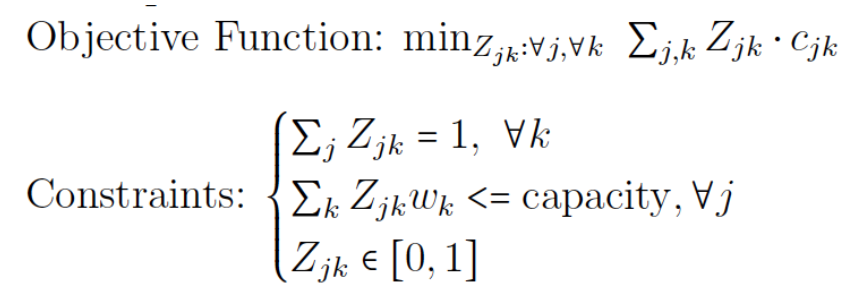
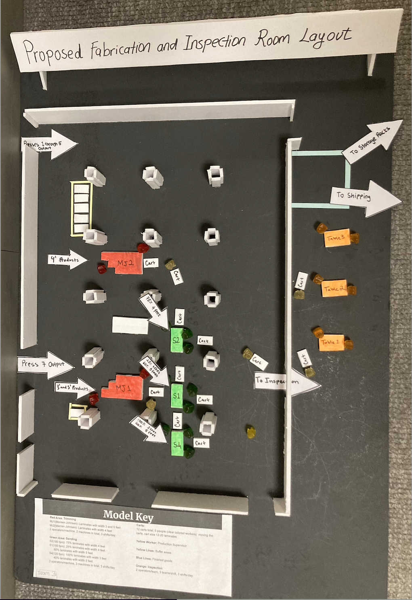
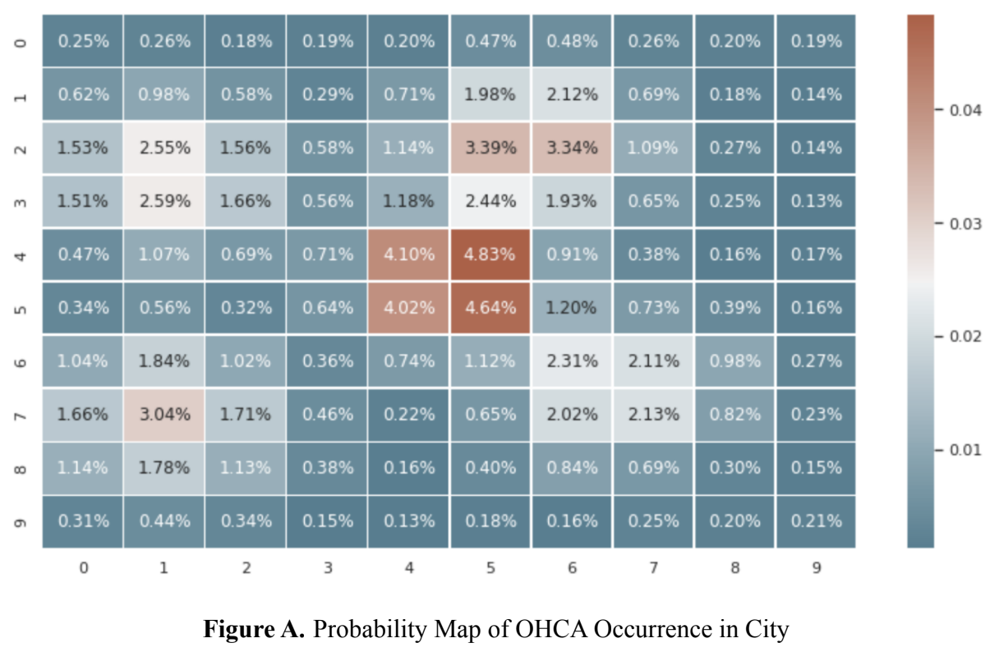
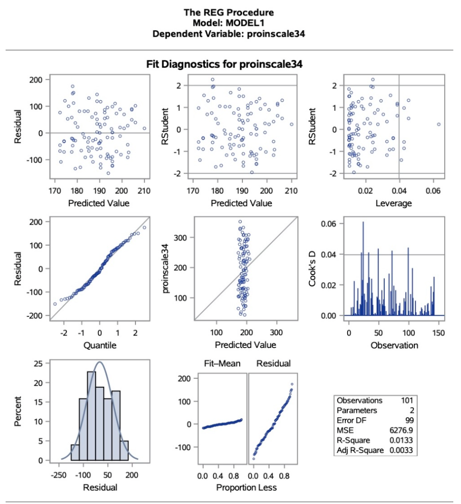
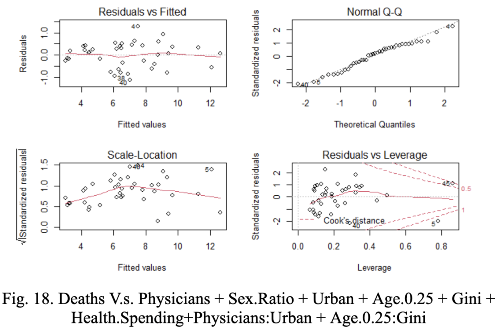

Experience  1. Data Analytics Capstone Project with Pitney Bowes: Ithaca, NY | Oct 2022 – Present Data Analyst, Outbound Truck Container Prioritization Capstone Project Developing enhancements for container prioritization to maximize the fraction of parcels arriving on time. Modeling transportation workflows of parcel sortation and cross-dock facilities; devising alternative container prioritization criteria based on strategic imperatives. Building Python-based simulation and linear programming to access key metrics of parcel delays and satisfaction of service level agreements. Achieving a 50% reduction in late parcels, from 23.1% to only 11.5% late, after performing an apple-to-apple comparison. 2. Tencent: Beijing, China | Jan 2022 – Jun 2022 Strategic Data Analyst Intern, Operations Department Developed cost forecasts for each video category for the new year using targets for Key Performance Indicators and historical data for Tencent’s short video business to promote business development. Analyzed and reported the sources and reasons for monthly view changes based on current operation strategies. Tracked day-to-day data management metrics to monitor abnormalities and troubleshoot operational issues and applied weekly percentages data analysis by Excel to inform managerial data-driven business decisions. Developed a settlement model to correct a substantial underpayment issue, retaining content providers. 3. Meituan (internet-based food delivery & reviews): Beijing, China | Sep 2021 – Oct 2021 Data Analyst Intern, Research and Development Department Supported operations by using MySQL to extract and analyze sales data in 1000+ stores in China, delivered ranking results, and provided recommendations to internal and government departments and schools. Analyzed demand and sales data across 30+ large Chinese cities and business circles to identify store sales leaders and top-selling products, and provided investment recommendations for business decision-makers. Analyzed ticket sales of 200+ tourist attractions in China to help the national tourism department identify underperforming attractions and better direct marketing spending. Projects 1. CarMax Data Analytics Showcase Competition (Dataiku & Python) | Dec 2022 – Jan 2023 Led a team to analyze auto replacement data by grouping and exploratory analysis and data visualization in Dataiku to enhance customized purchasing experience based on car owners’ trade-ins. Our team is ranked top 3 in the first round.  2. Improvements in Manufacturing Systems | Aug 2022 – Dec 2022 Led a team to analyze problems of the distribution system and reduce inventory costs by 26% by consolidation. Led another team to redesign the production system and save $1.8 million in cash flow by reducing inventories.  3. Out-of-Hospital Cardiac Arrest (OHCA) Survival Rate Simulation Modeling (Python) | Aug 2022 – Dec 2022 Analyzed 11k+ data of OHCA events to explore the fittest time distribution (gamma), generated 20k simulations of OHCA data (locations, happening times, response rates, etc.) with 40 million data points in Python (NumPy, Pandas, Matplotlib, Seaborn), and found the optimized average survival rate is 11.5%.  4. Relationship Between Children’s Diets and Obesity (SAS) | Apr 2021 – Jun 2021 Analyzed food intake data from children by variable selections, variable split, scale establishment, and correlation estimation, and found body mass index decreased by 0.04 for each unit increase in a healthy diet.  5. Analysis of Death Causation by COVID-19 in the U.S. (R) | Sep 2020 – Dec 2020 Identified factors related to the U.S. deaths caused by COVID-19 by statistical analysis (Machine learning: linear & multiple regression, principal component analysis) in R (ggplot2, MASS, stats).